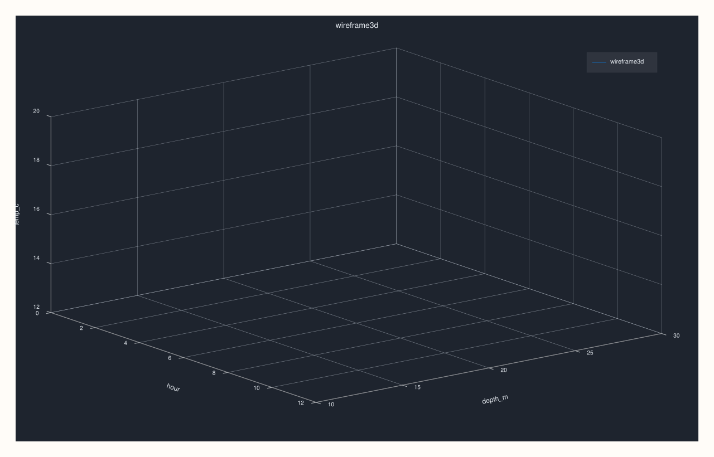

CatalogPlot3DAccessor::wireframe¶
Back to CatalogPlot3DAccessor API Reference
Signature¶
CatalogPlot3DAccessor::wireframe(
std::string_view x_key,
std::string_view y_key,
std::string_view z_key,
pluss::table::DataFrame::GroupOp op = pluss::table::DataFrame::GroupOp::Mean,
const pluss::table::Wireframe3DPlotOptions& options = {}) const -> pluss::pl::Studio
What It Does¶
The same projected-and-tabelized delegation as surface() — validates the
three keys, projects to just {x_key, y_key, z_key}, materializes via
tabelize(), and calls
DataFramePlot3DAccessor::wireframe on the result — but
drawn as an open mesh (a lattice of connecting lines) instead of a filled sheet.
Parameters¶
x_key, y_key, z_key (std::string_view, required)
Must all exist in the catalog — an unknown key throws before any projection/tabelize
work happens.
op (pluss::table::DataFrame::GroupOp, default Mean)
The aggregation applied per grid cell — see
surface()/DataFramePlot3DAccessor::surface
for the remaining numeric-rendering constraints after pivoting.
options (const Wireframe3DPlotOptions&)
Same scene/trace shape documented on
CatalogPlot3DAccessor::scatter.
Returns¶
pluss::pl::Studio
A figure with one 3D pane containing a single wireframe (lattice) trace over the
aggregated grid.
Examples¶
Example 1. Default op (Mean): the same grid as surface()’s Example 1,
drawn as a mesh instead of a filled sheet.
using namespace pluss::kindle::literals;
auto grid_data = pluss::kindle::Catalog({
"hour"_k = pluss::kindle::Stream(pluss::make_series({0.0, 12.0, 0.0, 12.0, 0.0, 12.0})),
"depth_m"_k = pluss::kindle::Stream(pluss::make_series({10.0, 10.0, 20.0, 20.0, 30.0, 30.0})),
"temp_c"_k = pluss::kindle::Stream(pluss::make_series({18.0, 20.0, 15.0, 16.5, 12.0, 12.5})),
});
auto chart = grid_data.plot3d().wireframe("hour", "depth_m", "temp_c");
chart.show();

Example 2. A different aggregation (Max) with a Studio-preset scene.
using namespace pluss::kindle::literals;
auto grid_data = pluss::kindle::Catalog({
"hour"_k = pluss::kindle::Stream(pluss::make_series({0.0, 12.0, 0.0, 12.0, 0.0, 12.0})),
"depth_m"_k = pluss::kindle::Stream(pluss::make_series({10.0, 10.0, 20.0, 20.0, 30.0, 30.0})),
"temp_c"_k = pluss::kindle::Stream(pluss::make_series({18.0, 20.0, 15.0, 16.5, 12.0, 12.5})),
});
pluss::table::Wireframe3DPlotOptions options;
options.scene.preset = pluss::pl::flash::ScenePreset3D::Studio;
auto chart = grid_data.plot3d().wireframe(
"hour", "depth_m", "temp_c", pluss::table::DataFrame::GroupOp::Max, options);
chart.show();

Notes¶
All three keys must exist in the catalog — an unknown key throws
"Catalog::plot3d().wireframe: unknown x key '<name>'"(ory/z) before any tabelize work runs.Delegates to
DataFramePlot3DAccessor::wireframeafter projecting to exactly the three requested keys — seesurface()’s important callout for why the projection happens beforetabelize().Returns a
pluss::pl::Studio— seeCatalogPlotAccessor::line’s important callout for how to view or save the result.
See Also¶
CatalogPlot3DAccessor::surface: the identical grid construction, rendered as a filled sheet instead of mesh edges.DataFramePlot3DAccessor::wireframe: the full mechanics this method delegates to.